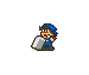

Cachorro

Seu fiel companheiro que o acompanha desde o primeiro dia na fazenda.
- Como obter: Já começa com o jogador no início do jogo.
- Função: Protege o gado de ataques de cães selvagens se for deixado do lado de fora à noite.
- Dica: Assobie para ele e coloque-o dentro de casa em dias de tempestade para manter o afeto alto.